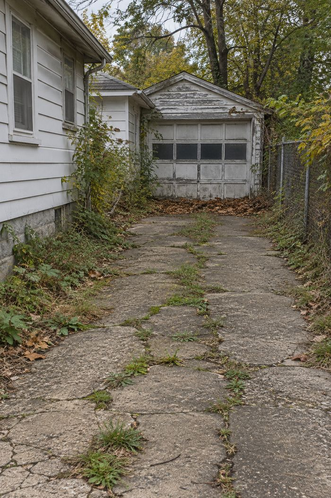

Cash home buyer · North Jersey
I buy the houses most people walk away from.
Hoarder houses. Inherited homes. Fire, water, mold, termites. Sell your house exactly as it is, for cash, on your timeline.
- No repairs
- No clean-out
- No fees
Don't fix it.
Roof, siding, foundation, mold, termites, fire or water damage. You don't spend a dollar on repairs. I buy the house the way it stands today.
Don't clean it out.
Leave the furniture, the boxes, the bags, whatever is in the attic and the basement. Take what matters to you and close the door. The rest is my job.
No agents. No showings.
No realtor commission, no strangers walking through your house, no inspections. Just a cash offer, straight from the person buying the house. All the work you see here happens after closing, on my dime.
Three steps. That's it.
Send me the town
Text or DM me the town and tell me what's going on with the house.
Get a cash offer
Free, with no obligation. If the number works for you, we move forward.
Close when you're ready
Fast if you need it, later if you need time. You pick the date.
Any condition
Does your house look like this?
Then let's talk. That's exactly the kind of house I buy.



Illustrations of the kind of house I buy, made with AI. Most buyers see a problem. I see a house I can work with.
- Hoarder houses
- Inherited homes
- Estate sales
- Vacant houses
- Fire damage
- Water damage
- Mold
- Termites
- Foundation issues
- Years of deferred maintenance
Before & after
Then I bring them back.
Drag the line. These are real houses from my own projects, photographed before and after.

 BeforeAfter
BeforeAfter

 BeforeAfter
BeforeAfter
 BeforeAfter
BeforeAfter

 BeforeAfter
BeforeAfter

 BeforeAfter
BeforeAfter
From me
Here's the deal, in 23 seconds.
In my own words. Watch it or read it below.
Read the transcript
“Are you on the market to sell your home, but you're worried about repairs, cleaning out, showings, realtors, paying commission and all that? No, no, no. Let's not do that. Let's connect with each other. I can pay you cash, worry free. You don't have to go through inspections, and then we can make it happen fast. Cash, as-is offers. Shoot me a text or DM me.”


Who's buying
I'm Luca.
I buy houses across North Jersey and renovate them with my team. Demolition, electrical, plumbing, HVAC, windows, floors, kitchens, bathrooms.
Everyone sees the finished home. Very few see what happens before the drywall goes up.
If you're stuck with a house that's more work than you want to deal with, or an inherited home still full of a lifetime of belongings, that's where I come in. You talk to me directly.
Questions
Straight answers.
Do I have to clean out the house first?
No. Leave anything you don't want to keep: furniture, boxes, trash, the stuff in the attic. Take what matters to you and I'll take care of the rest.
Do I need to make any repairs?
No. I buy the house as-is. Mold, termites, fire or water damage, foundation issues, a roof that leaks: you don't fix anything.
Are there fees or commissions?
No. There's no realtor, so there's no commission, and I don't charge any fees.
Will there be showings or inspections?
Neither. No strangers walking through your house, and you don't have to go through a home inspection.
How fast can we close?
On your timeline. We can make it happen fast if you're in a hurry, or take our time if you need to sort things out first.
Is the offer free?
Yes. The cash offer is free and you're under no obligation to accept it.
Where do you buy?
New Jersey, mostly North Jersey. Send me the town and a few details, and I'll let you know.